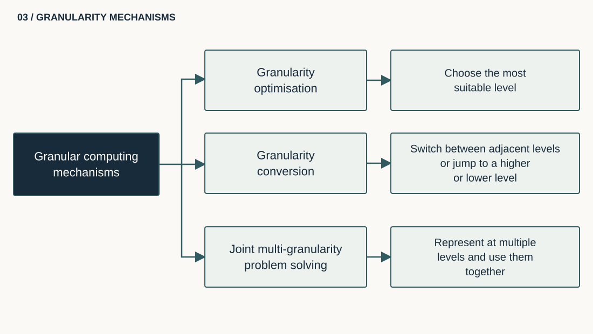
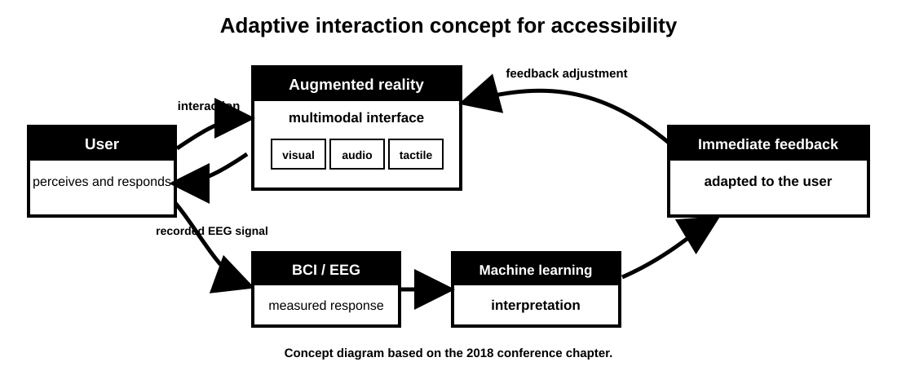

Sami Rojbi · PhD defended in 2022
50% co-supervision in an international setting on adapting digital documents into tactile elements for people with specific needs.
Scientific work
My research explores accessible images and tactile maps, multimodal fatigue analysis, EEG-based brain–computer interfaces and multimodal assistive interfaces. The sections below combine explanatory diagrams with figures from published work.
Area 1
Diagrams redrawn and translated from the author’s ICH seminar slides. These explanatory diagrams are not reproduced research results.




Area 2

Related work: Parallel Statistical and Machine Learning Methods for Estimation of Physical Load (2018).
Back to research themes ↑Area 3
Figures 2 and 8: Gordienko, Gordienko, Taran, Rojbi, Telenyk and Stirenko (2025), Frontiers in Neuroinformatics. Reduced previews; full-size originals are unchanged. Source article · CC BY 4.0.

Each row represents one of the six actions: HandStart, FirstDigitTouch, BothStartLoadPhase, LiftOff, Replace or BothReleased. The columns show selected points in the sequence; the colours encode EEG amplitude on the figure’s scale. The maps visualise the recorded data, not classifier performance.
Time is expressed in milliseconds, amplitude in microvolts (µV). Each row has its own colour scale, so colours should not be compared directly between actions.

The horizontal axis lists the six actions; the vertical axis shows mean AUC (ROC area). This chart summarises performance across the tested sequence lengths. Offset 0.5 has the highest mean AUC for each action. The authors do not consider the difference between offsets 0 and 1 statistically significant. The similar panels do not establish a universal improvement from synthetic noise.
Offset is the label’s position within the input EEG sequence: beginning (0), middle (0.5) or end (1).
Area 4

The process starts with a geographic map image. The software applies image-processing techniques, identifies labels with OCR, and translates recognised text into Braille for a tactile output. Tactile-graphics specialists are supported during preparation; the diagram summarises the principle described by the authors.
Publication: Nizar Bouhlel and Anis Rojbi, New Tools for Automating Tactile Geographic Map Translation, ACM ASSETS ’14, 2014, pp. 313–314. Read the ACM record and abstract.
Back to research themes ↑Area 5

The augmented-reality interface provides visual, audio and tactile interactions. The user’s neurophysiological responses are measured by a brain–computer interface (BCI/EEG) and interpreted using machine learning. This information can be used to adapt the feedback shown to the user. The diagram represents the concept proposed in the chapter; it is not an evaluation result.
Publication: User-Driven Intelligent Interface on the Basis of Multimodal Augmented Reality and Brain-Computer Interaction for People with Functional Disabilities, FICC 2018 conference paper, first published online in 2018, pp. 612–631. Read the Springer chapter.
Back to research themes ↑Scientific supervision
Research supervision in tactile accessibility and health-state prediction using machine learning.
50% co-supervision in an international setting on adapting digital documents into tactile elements for people with specific needs.
25% co-supervision of an international joint PhD on healthcare monitoring and prediction using machine-learning techniques.